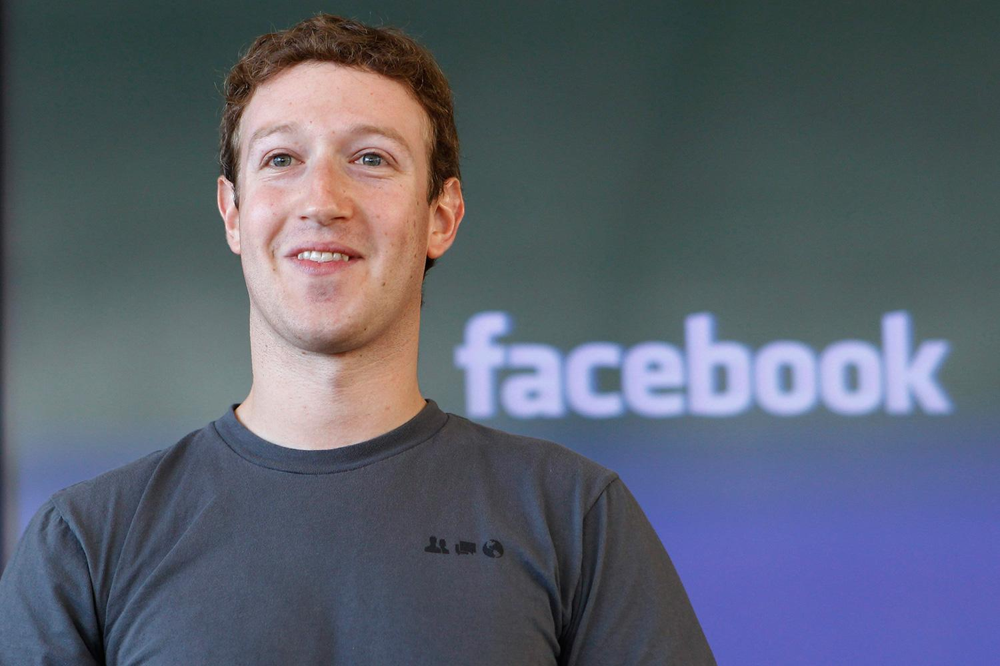

Mark Zuckerberg

Ngày nay, nếu có một doanh chủ nào có khả năng truyền cảm hứng cho hàng triệu người trẻ tuổi theo đuổi giấc mơ khởi nghiệp thì người đó chính là Mark Zuckerberg. Là người bỏ học giữa chừng và nổi tiếng trên thế giới với vai trò nhà sáng lập mạng xã hội Facebook, Mark Zuckerberg trở thành chủ đề cho bộ phim bom tấn của Hollywood, rồi xuất hiện trong chương trình 60 Minutes cũng như một chương trình khác của Oprah Winfrey và được bình chọn là Người đàn ông của năm trên tạp chí Time.
Mặc dù Zuckerberg và bạn của anh mới thành lập Facebook vào tháng Hai năm 2004 nhưng trang mạng xã hội này đã nhanh chóng thu hút hơn 750 triệu người tham gia và bỏ ra 700 triệu phút sử dụng mỗi tháng. Trong suốt mùa hè năm 2011, khi bắt đầu có tin đồn rằng Facebook đang có kế hoạch chào bán ra công chúng, một số người tin rằng công ty sẽ có giá trị khoảng từ 40 đến 100 triệu đô-la.
Tuy nhiên, khi Zuckerberg và những người đồng sáng lập Dustin Moskovitz, Chris Hughes và Eduardo Saverin cho ra mắt Facebook từ phòng trọ của anh ở Đại học Harvard, anh chưa bao giờ nghĩ rằng nó sẽ là một công việc kinh doanh. Thực tế, Zuckerberg còn tuyên bố rằng anh chẳng bao giờ nghĩ đến chuyện đó. Thay vào đó, anh và các bạn thường đắm chìm vào những buổi trao đổi về việc con người có thể kiểm soát lượng thông tin khổng lồ trên thế giới trên Internet như thế nào.
Những buổi thảo luận sôi nổi đó đã giúp cho chàng thanh niên 19 tuổi Zuckerberg xây dựng một ứng dụng cho phép sáu nghìn sinh viên Harvard kết nối được với bạn bè và gia đình. Điều thú vị là anh ấy chỉ mất “một vài tuần” để lập trình ra nó.
Anh chia sẻ: “Thực sự, tôi dứt khoát không muốn xây dựng một công ty. Do đó, trong khi đa số mọi người muốn công bố ứng dụng tại các trường mà họ cho rằng sẽ có nhiều khả năng thành công nhất, tôi lại muốn công bố nó ở các trường mà tôi thấy sẽ có ít khả năng nhất. Đó là những trường đã có một số hình thức cộng đồng. Lý do tôi làm như vậy là vì tôi muốn biết rằng, vào lúc đó, liệu đây có phải là việc đáng để đầu tư nhiều thời gian như những dự án khác hay không.”
Câu trả lời rõ ràng là “có”, sự thật rõ ràng là vậy. Vào tháng Ba năm 2004, chỉ một tháng sau khi ứng dụng này ra mắt ở Đại học Harvard, Facebook được nhân rộng ra các trường Stanford, Columbia và Yale. Tháng Sáu, Zuckerberg và các bạn chuyển đến Palo Alto, California với hy vọng sẽ ở đây đến hết mùa hè rồi trở lại Harvard. Nhưng rồi sự hào hứng về việc xây dựng công ty ở Thung lũng Silicon đã giữ chân họ. Họ quyết định ở lại. Vào cuối năm thứ nhất, Facebook đã có gần một triệu người sử dụng. Sau khi có được 12,7 triệu đô-la vốn đầu tư từ Accel Partners vào tháng Năm năm 2005, Facebook đã mở rộng ra hơn 800 trường đại học.
Zuckerberg nhanh chóng tạo ra nhiều cải tiến vì anh ấy là một lập trình viên xuất sắc. Anh đã bắt đầu sử dụng máy tính và viết phần mềm khi còn học trung học. Ông Edward, cha của Zuckerberg, một bác sĩ nha khoa, đã dạy anh lập trình trên Atari BASIC vào những năm 1990. Sau đó, ông còn thuê một người phát triển phần mềm làm gia sư cho Zuckerberg. Anh tiến bộ rất nhanh chóng, đặc biệt là trong việc phát triển các công cụ truyền thông, trò chơi và cả chương trình nghe nhạc. Chương trình Synapse Media Player của Zuckerberg sử dụng trí thông minh nhân tạo để ghi nhớ thói quen nghe nhạc của người dùng và thu hút sự chú ý của Microsoft và AOL. Hai công ty không chỉ mua phần mềm này mà còn tuyển thẳng Zuckerberg vào làm việc tại công ty sau khi tốt nghiệp Học viện Phillips Exeter. Tuy nhiên, anh lại chọn Đại học Harvard.
Đây là một bước đi thông minh của Zuckerberg. Vào năm thứ hai ở Đại học Harvard, Zuckerberg viết mã lập trình cho một chương trình phần mềm có tên là CourseMatch, giúp sinh viên lựa chọn lớp học dựa trên những lựa chọn của các sinh viên khác. Ngoài ra, phần mềm này còn giúp sinh viên lập các nhóm học tập. Sau đó, anh tạo ra chương trình gọi là Facemash cho phép sinh viên có thể bầu chọn người có khuôn mặt đẹp nhất hoặc có thân hình hấp dẫn nhất từ các bức ảnh. Tuy trang này chỉ mới xuất hiện một tuần nhưng nó đã được đông đảo sinh viên yêu thích đến nỗi làm quá tải máy chủ của trường và buộc phải đóng lại. Sau sự kiện đó, Facebook ra đời. Và phần còn lại chính là những gì đã, đang và tiếp tục nhìn thấy trong tương lai.
Từ ý tưởng đến doanh nghiệp
Từ những cuộc đối thoại giữa tôi và các bạn học, chúng tôi đưa ra ý tưởng về việc chúng tôi nghĩ thế giới sẽ đi về đâu và điều gì định hướng sự phát triển của Facebook đến bây giờ. Chúng tôi đưa ra đa phần là những quyết định mang tính kỹ thuật cũng như việc đưa những người thông minh về cùng làm việc. Những người thông minh nhất mà tôi từng biết là những người đã tham gia xây dựng Facebook và rất nhiều người trong số họ vẫn đang ở đây. Đó là những người từng dạy tôi ở trường, từng là bạn học của tôi.
Tôi nhận ra rằng xây dựng một công ty là cách tốt nhất để kêu gọi nhiều người cùng tập hợp lại để làm một điều thật vĩ đại. Nếu cái mà họ đang xây dựng là tốt, bạn có thể hợp tác và thưởng cho họ nếu sản phẩm hoạt động tốt. Tôi chỉ mất vài tuần để xây dựng phiên bản đầu tiên của Facebook. Việc đó diễn ra khá nhanh đối với một hệ thống có quy mô lớn như thế. Tôi thuê một máy chủ với giá 85 đô-la/tháng. Và từ đó, chúng tôi nhận được hàng triệu lượt xem mỗi ngày. Có thời điểm, có 10 đến 20% sinh viên Harvard đăng nhập cùng lúc. Tất cả mọi thứ chỉ trong tuần đầu tiên.
Sau đó, tôi có thêm nhiều người giỏi cùng tham gia. Cuối cùng, chúng tôi chuyển đến California. Ban đầu, chúng tôi không có ý định sẽ chuyển đến đó. Chúng tôi chỉ muốn đi tham quan trong mùa hè vì chúng tôi nghĩ rằng: “Tất cả những công ty công nghệ tuyệt vời đều đến từ Thung lũng Silicon. Chẳng phải sẽ rất tuyệt nếu có cả mùa hè ở đó và trải nghiệm những công ty đó sao.”
Chúng tôi dự định quay lại Đại học Harvard vào mùa thu. Tuy nhiên, Harvard có một chính sách rất tuyệt cho phép bạn có thể nghỉ học bao nhiêu lâu tùy thích. Vì thế, chúng tôi quyết định: “Được rồi, chúng ta sẽ nghỉ một học kỳ và tiếp tục xây dựng mọi thứ đã.” Có thêm nhiều người tham gia với chúng tôi. Tại thời điểm đó, chúng tôi chính thức hợp thành một công ty và nhận được vốn đầu tư từ Peter Thiel, nhà đầu tư đầu tiên của chúng tôi. Sau đó, mọi thứ cứ phát triển và chúng tôi có tới hơn một triệu người sử dụng trong năm đầu tiên chạy trang này.
Được một thời gian, chúng tôi quyết định rằng: “Được rồi, chúng ta sẽ bỏ học kỳ thứ hai của Harvard.” Sau đó, bạn biết đấy, mọi thứ lại tiếp tục phát triển và chúng tôi có gần năm triệu người dùng. Chúng tôi lại nghĩ: “Chúng ta bỏ nốt năm cuối đi.” Và sau đó thì: “Mình đoán là chúng mình sẽ không quay lại nữa đâu.” Nhưng tôi chưa bao giờ đưa ra một quyết định lớn theo kiểu: “Được rồi, mình sẽ bỏ học và bắt đầu thành lập công ty.” Việc đó xảy ra từ từ và theo từng giai đoạn. Chúng tôi luôn suy nghĩ cho bước kế tiếp.
Về những dự án khởi nghiệp trên Internet
Một trong những điều tuyệt vời của Internet là những thị trường này rất hiệu quả. Với những loại hình kinh doanh truyền thống, bạn phải mất rất nhiều năm đầu tư trước khi biết được liệu việc mình đang làm có thành công hay không. Giờ đây, việc hoàn thành một cái gì đó chỉ trong một ngày cuối tuần hoặc trong hai tuần như phiên bản đầu tiên của Facebook là hoàn toàn khả thi.
Sau đó, bạn chỉ việc công bố và xem rằng liệu nó có thỏa mãn được thị trường hoặc có thể là thứ gì đó mà bất kỳ ai cũng có thể dùng hay không. Từ đó, bạn có thể có thông tin phản hồi ngay tại chỗ và điều chỉnh việc bạn đang làm một cách nhanh chóng.
Về văn hóa hacker[55] của Facebook
Tôi đã tìm hiểu những công ty trong Thung lũng Silicon và thật sự muốn tạo dựng một công ty công nghệ. Một số công ty tự gọi mình là công ty công nghệ nhưng thực sự không phải vậy. Chúng tôi luôn cố gắng có được những nhân viên và doanh nhân có hiểu biết về công nghệ trong quá trình điều hành công ty. Kể cả ở vị trí công việc không mang tính kỹ thuật cũng vậy. Một trong những nhân viên marketing của chúng tôi cũng hiểu biết về công nghệ.
Trong quá trình phát triển, chúng tôi nhận ra rằng chúng tôi không giống những công ty khác. Google là một công ty công nghệ mà tôi ngưỡng mộ. Họ có một nền văn hóa học thuật rất mạnh mẽ. Họ thực hiện rất nhiều nguyên cứu và có nhiều người mang học vị tiến sĩ. Điều khiến chúng tôi tự hào về bản thân là đã tạo ra tầm ảnh hưởng lớn, có văn hóa hacker và tạo cho mọi người cơ hội để phát triển – đó cũng là những điều mà chúng tôi đang hướng đến. Chúng tôi có hơn 300 triệu người sử dụng và xấp xỉ gần 300 kỹ sư. Facebook có tỷ lệ người dùng so với tỷ lệ kỹ sư cao hơn bất kỳ một công ty nào khác.
Một trong những điều mà chúng tôi cam kết là xây dựng được đội ngũ nhân viên nhỏ gọn hơn. Trong công việc, chúng tôi thường xuyên cải tiến mã lập trình. Chúng tôi khuyến khích mọi người tự tạo ra sản phẩm của riêng mình. Chúng tôi có một công ty công nghệ luôn sáng tạo và đột phá.
Mục tiêu của chúng tôi không phải là mãi giữ chân nhân viên. Có những công ty đào tạo nhân viên rất tốt. Rất nhiều sinh viên Harvard làm việc cho McKinsey. Nhiều người đến làm cho IBM vì đó là nơi tốt nhất để học về bán hàng. Rất nhiều người đến USC[56] để học cách chơi bóng bầu dục. Mục tiêu của Facebook là trở thành một nơi tốt nhất để học cách tạo ra mọi thứ. Nếu bạn muốn học cách để tạo nên những sản phẩm tốt, có ý nghĩa thực tiễn và có ảnh hưởng lớn, tôi có thể nói rằng không có nơi nào khác giúp bạn làm điều đó tốt hơn Facebook.
Nếu các bạn muốn, các bạn có thể đến Facebook trong một, hai hay ba năm. Steve Chen, người sáng lập ra Youtube, cũng từng làm việc ở Facebook. Tôi không khuyến khích mọi người làm việc ở Facebook rồi ra đi. Nhưng tôi nghĩ rằng bạn sẽ học được những kỹ năng đáng giá. Chúng tôi không làm ra vẻ rằng chúng tôi đang xây dựng một công ty mà mọi kỹ sư công nghệ sẽ làm việc tại đó mãi mãi. Tôi chỉ muốn góp phần xây dựng một vài tổ chức thành những nơi có văn hóa hacker lớn mạnh về lâu dài.
Về việc tập trung và hành động thật nhanh
Bạn chỉ nên tập trung vào một vài thứ mà bạn quan tâm và phải nhanh chóng hành động. Bạn cần phải từ bỏ một số thứ. Tôi nghĩ đó là một phần lớn trong công việc của một CEO. Bạn tuyển một nhóm để gây dựng nên mọi thứ và bạn đề ra phương hướng hoạt động. Điều quan trọng là cần xác định xem bạn sẽ đánh đổi điều gì để đạt được thành công.
Chúng tôi nghĩ rằng cuối cùng người ta sẽ đánh giá bạn qua những gì bạn xây dựng được chứ không phải qua vẻ bên ngoài. Tôi nghĩ sẽ có rất nhiều áp lực trong nội bộ các công ty khi mà mọi người muốn bắt đầu thật suôn sẻ. Nhưng điều quan trọng hơn là không ngừng cải thiện theo thời gian. Hãy liều lĩnh nhiều hơn nữa. Chỉ có như vậy, chúng ta mới có thể thành công lớn được.
Về việc chấp nhận rủi ro
Rủi ro lớn nhất mà bạn phải đối mặt là không chấp nhận bất kỳ rủi ro nào. Ở một thế giới mà mọi thứ đều diễn ra nhanh chóng, bạn nên biết rằng nếu bạn không thay đổi bạn sẽ thua. Việc không liều lĩnh là việc rủi ro nhất bạn có thể làm. Bạn phải làm những điều táo bạo kể cả khi chúng không rõ ràng.
Hôm qua, chúng tôi đã đưa ra một thay đổi trên Facebook giúp bạn biết được các sự kiện mới nhất hoặc những cập nhật thú vị nhất. Bất kể điều gì chúng tôi làm, nếu nó thay đổi trang mạng, sự thay đổi đó sẽ thực sự gây tranh cãi trong cộng đồng người dùng, nhất là khi bạn đang cung cấp dịch vụ web mà mọi người không được can thiệp trực tiếp vào.
Giá trị sẽ không là gì cả nếu chúng không tạo ra tranh cãi. Chúng tôi muốn tiến lên nhanh chóng và chúng tôi sẵn sàng từ bỏ rất nhiều thứ để có thể làm điều đó.
Về việc chuyển đến Thung lũng Silicon
Tôi nghĩ đó là một quyết định có ích cho tôi vì khi bắt đầu công việc tôi chỉ mới 19 tuổi. Có nhiều thứ mà tôi không biết và đến giờ vẫn thế. Thung lũng Silicon là một nơi tuyệt vời để gặp gỡ những kỹ sư tài năng. Ở đây đã có sẵn cơ sở hạ tầng để giúp các công ty từ khi mới bắt đầu, dù cho đó là một cộng đồng đầu tư hay cộng đồng luật hoặc là những lĩnh vực khác. Những điều kiện đó đã giúp tôi rất nhiều. Tuy nhiên, tôi nghĩ những điều kiện đó cũng có thể có hại nữa.
Vì sao anh lại quyết định giữ chức CEO?
Đây chỉ là ý kiến của tôi qua ngành công nghiệp công nghệ và lịch sử của nó: Tôi nghĩ rằng một công ty thành công thường được lãnh đạo bởi chính những người sáng lập ra nó. Những người này hiểu vì sao công ty được thành lập và có đủ sự tín nhiệm trong công ty để có thể đưa ra quyết định cần thiết. Thế giới thay đổi rất nhanh và việc điều hành công ty một cách hiệu quả, theo tôi, là một phần cực kỳ quan trọng. Một vài người chỉ cho tôi một số số liệu thú vị rằng trong số những công ty đại chúng, những công ty được điều hành bởi chính người sáng lập thành công hơn hẳn số còn lại.
Về việc có mục đích rõ ràng.
Chúng tôi có ý thức rất rõ về mục đích của công ty. Bạn biết đấy, chúng tôi không bắt đầu Facebook với mục đích xây dựng một trang mạng hoặc thành lập công ty. Chúng tôi bắt đầu nó vì chúng tôi muốn tạo một thế giới mở và liên kết hơn. Tạo dựng một trang mạng là một bước tiến đến với điều đó. Tôi nghĩ rằng nền tảng mà chúng tôi đang phát triển là thứ làm tôi hào hứng nhất. Chúng tôi có gần một triệu nhà phát triển đang xây dựng nhiều thứ, từ những sinh viên tập tành lập trình như tôi đã từng làm, đến những doanh nghiệp nhỏ và lớn có doanh thu hàng trăm triệu đô-la. Họ xây dựng những sản phẩm của riêng họ từ nền tảng của Facebook. Điều đó thật tuyệt vời.
Về việc mắc sai lầm.
Có rất nhiều thứ tôi muốn làm khác đi. Nhìn chung, tôi đã mắc rất nhiều sai lầm và đó đều là những sai lầm đáng giá. Chúng tôi đã trở nên tốt hơn khi mắc phải phần lớn những sai lầm đó, nhưng tôi cũng cho rằng chúng tôi đã làm rất tốt việc giữ vững những giá trị của công ty và trung thành với những dự định ban đầu của mình. Chúng tôi cũng đã có nhiều quyết định đúng đắn về kỹ thuật và sản phẩm trong suốt quá trình hoạt động cũng như có những quyết định mang tính văn hóa để đảm bảo những người tốt nhất sẽ đến làm việc tại đây và nhanh chóng tạo ra ảnh hưởng lớn. Tôi nghĩ rằng đây là những điều quan trọng nhất. Nếu bạn hiểu đúng những điều này thì bạn có quyền mắc sai lầm.
Thật ra, một trong những giá trị cốt lõi của Facebook đó là “Tiến nhanh”. Chúng tôi từng phát biểu điều này thành châm ngôn “Tiến nhanh và đột phá” với ý nghĩa: Nếu bạn không có đột phá nào tức là bạn chuyển động chưa đủ nhanh. Tôi nghĩ điều này về cơ bản là đúng. Điều tôi muốn nói ở đây là ngay lúc này, chúng tôi đang tối ưu hóa văn hóa của mình để biến công ty trở thành nơi mọi người có thể đến và tạo dựng mọi thứ một cách nhanh chóng.
Từ việc có công cụ hợp lý trong một môi trường phát triển phù hợp để tạo dựng mọi thứ nhanh chóng, cho đến những buổi tối viết mã thâu đêm hay việc tuyển những người tài năng có thể thúc đẩy sự phát triển, tất cả đều xoay quanh việc tiến nhanh. Tôi nghĩ rằng sẽ có một vài thứ trong đó cho các doanh nghiệp học hỏi và việc mắc lỗi là hoàn toàn bình thường.
Cuối cùng, mục tiêu xây dựng một thứ gì đó vẫn là xây dựng, chứ không phải phạm sai lầm. Để rút ra bất kỳ kết luận hợp lý nào, bạn luôn phải lỡ bước một vài lần trên cả quãng đường. Tôi nghĩ mọi việc rồi sẽ ổn nếu bạn học được nhiều điều từ chúng và biến chúng thành những hành trang hữu ích trên con đường đến nơi mà bạn muốn đến.